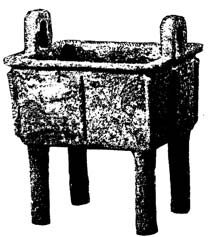
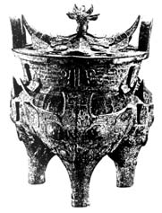
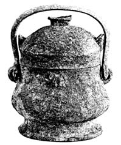
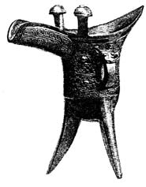

COMENTÁRIO DE GRAMÁTICA
11.1. Técnicas de Divisão de Texto
Ao ler textos chineses pré-clássicos, enfrentamos constantemente um problema que raramente surgia ao estudar inscrições Yin. Isso envolve dividir o texto e definir os limites das frases.
Para esse propósito, diversas técnicas específicas podem ser usadas com textos Zhou. É claro que nem todas podem ser aplicadas em todos os casos.
A base para dividir um texto em frases é o nosso conhecimento da estrutura da frase chinesa antiga. As mesmas partes da frase existem na língua pré-clássica e na língua arcaica e ocupam as mesmas posições que antes. Portanto, pode-se argumentar que, por exemplo, após um predicado e um objeto direto, apenas um objeto indireto com preposição pode vir em seguida e, depois disso, a presença de qualquer outra parte da frase é impossível. Assim, se determinarmos a presença de um objeto indireto com preposição em posposição em relação ao predicado, isso indica o fim da frase.
Além disso, embora as inscrições Zhou não sejam tão padronizadas em sua fórmula quanto as inscrições Yin, elas também contêm algumas fórmulas familiares, cujo conhecimento nos permite dividir o texto em partes menores.
Por exemplo, quase todas as inscrições contêm palavras endereçadas pelo rei ou outro oficial de alto escalão ao proprietário do navio. Essas palavras geralmente são apresentadas como discurso direto, ou seja, introduzidas pela palavra 曰 yuē, e começam com um endereço. O discurso do rei nesses casos começa com as palavras: 王若曰 wáng ruò yuē "O rei disse assim: ‘..."".
O discurso do wang geralmente é seguido por uma frase na qual o proprietário do recipiente expressa gratidão pela recompensa, favor ou outro reconhecimento por seus serviços. Essa frase pode assumir várias formas, mais frequentemente como segue:
...拜手稽首對揚...休 ...bài shǒu qǐ shǒu duì yáng ... xiū
"... cruzou as mãos e se curvou ao chão, fez uma inscrição [no recipiente e, assim,] ofereceu louvor... por [sua] misericórdia."
A seguir, uma mensagem afirmando que o proprietário do recipiente o dedica a a memória de um ancestral:
用作...尊彝 yòng zuò...zūn yí "Usou-o como um recipiente de sacrifício..."
11.2. O Pronome Pessoal 厥 jué
O sistema de pronomes pessoais do período arcaico era caracterizado, como já mencionado, por um claro contraste entre um grupo de pronomes pessoais usados como sujeitos e objetos e outro grupo (como modificadores de substantivos).
Essa distinção persiste na língua pré-clássica inicial.
Pronomes de primeira pessoa (余 yú para a 1ª pessoa, 汝 rǔ para a 2ª):
a) sujeito Pronomes:
余唯令 yú wéi lìng "Eu comando";
汝勿不善 rǔ wù bù shàn "Você não deve fazer nada errado";
b) Pronomes oblíquos:
受余 shòu yú "conceda-me";
令汝 lìng rǔ "ordenar a você."
Pronomes de segunda pessoa (朕 zhèn para a primeira pessoa, 乃 năi para a 2º):
拼朕位 pīn zhèn wèi "Apoie meu trono!"
乃祖既令乃父 năi zǔ jì lìng năi fù "Seu avô ordenou a seu pai."
No entanto, se a língua arcaica era completamente desprovida de pronomes de terceira pessoa, então nos textos do início do período pré-clássico aparece 厥 jué - um novo pronome pessoal pertencente ao segundo grupo.
O uso específico deste pronome é evidente, por exemplo, nas duas passagens a seguir, uma das quais contém discurso direto e a outra não:
令曰更乃祖考 lìng yuē gēng năi zǔ kăo "Ele ordenou: 'Tome o lugar de seu avô e de seu pai!'"
令更厥祖考 lìng gèng jué zǔ kăo "Ele ordenou: 'Tome o lugar de seu avô e de seu pai.'"
厥 jué é um pronome pessoal de terceira pessoa usado apenas como atributo de um substantivo. Isso significa que no texto apenas um nome pode seguir este pronome:
厥絲束 jué sī shù "seu novelo de seda";
厥寶尊彝 jué băo zūn yí "seu precioso recipiente."
厥 jué pode ser traduzido como "seu":
公賜厥順子貝 gōng cì jué shùn zǐ bèi "Gong deu conchas a seu filho obediente."
11.3. Duplicação de Palavras Nocionais
Vários casos diferentes de duplicação de palavras nocionais são encontrados no chinês pré-clássico.
Um deles é a duplicação de uma palavra em uma função nominal. É usado para denotar uma pluralidade de objetos (pessoas) expressos por um nome próprio:
子子孫孫 zǐ zǐ sūn sūn "filhos e netos."
11.4. Modificador adverbial de duração de ação
A indicação da duração de uma ação ou estado é expressa na linguagem pré-clássica (bem como na arcaica) por meio de um modificador adverbial que precede o predicado correspondente:
三年静東國 sān nián jìng dōng guó "Ele pacificou os estados orientais por três anos."
Inscrições em vasos de bronze de Zhou Ocidental costumam usar fórmulas padrão para indicar a duração da ação, incluindo a frase 萬年 wàn nián "dez mil anos":
余其萬年寶用 yú qí wàn nián băo yòng "Vou valorizar [este navio] por dez mil anos."
效其萬年奔走扬公休 xiào qí wàn nián bēn zǒu yáng gōng xiū "Xiao tentará retribuir o gong por seu favor por dez mil anos."
O fato de esta frase ser usada aqui especificamente como uma circunstância é indicado pelo advérbio 其 qí que a precede.
A presença dos advérbios 亦 yì e 其 qí antes do sintagma nominal 子子孫孫 zǐ zǐ sūn sūn nos permite determinar que ele também é um modificador adverbial na seguinte frase:
亦其子子孫孫永寳 yì qí zǐ zǐ sūn sūn yǒng băo "E [este vaso] também será usado como um tesouro para sempre, ao longo da vida de todos os filhos e netos."
ЛЕКСИЧЕСКИЙ КОММЕНТАРИЙ
11.А. Обозначение дат
Для обозначения дней в чжоуское время, как и в иньское, продолжает применяться система циклических знаков. Однако в целом даты записываются теперь несколько иначе.
Прежде всего для обозначения года употребляется слово 年 nián, ранее имевшее значение «урожай». Перед ним, как правило, стоит слово 王 wáng, что указывает на систему летосчисления, принятую чжоуским правителем. Однако титул вана не указывается, и остается неизвестным, какой именно правитель имеется в виду (единой системы летосчисления в чжоуское время не существовало).
После обозначения года обычно следует указание на соответствующий месяц. Первый месяц в году называется 正月 zhēng yuè, а последующие обозначаются словосочетаниями 二月 èr yuè «второй месяц», 三月 sān yuè «третий месяц» и т. д.
Перед обозначением дня иногда стоит выражение 辰在 chén zài «созвездие находится в...», связанное с особенностями астрономических представлений чжоусцев.
Дата в начале надписи всегда оформляется эмфатической частицей 唯 wéi:
唯王二十又五年四月甲午 wéi wáng èr shí yòu wǔ nián sì yuè jiă wǔ «двадцать пятый год вана, четвертый месяц, день цзя-у».
11.Б. Обозначение времени суток
В иньских надписях встречается несколько специальных терминов для обозначения частей суток: 明 míng «рассвет», 旦 dàn «восход солнца», 朝 zhāo «утро», 中日 zhōng rì «полдень», 昏 hūn «вечер», 夕 xī «ночь». Практически так же делили сутки и чжоусцы. Единственным нововведением было, пожалуй, лишь выделение еще одного периода — предрассветного времени, когда ночь уже на исходе. Это время называлось 昧爽 mèi shuăng или 昧旦 mèi dàn (в «Шицзине» есть такая фраза: 女曰雞鳴, 士曰昧旦 nǚ yuē jī míng, shì yuē mèi dàn «Жена сказала: “Петух пропел”, cупруг сказал: “Редеет мрак”»).
Обратим внимание на то, что все торжественные церемонии, связанные с назначением на должность высших сановников и т. д., начинались всегда очень рано, часто еще до рассвета, чтобы наиболее важная их часть приходилась на тот момент, когда вставало солнце.
11.В. Чжоуские ритуальные сосуды
До завоевания чжоусцы, по всей видимости, не владели бронзолитейной технологией. Покорив Инь, они привлекли к себе на службу иньских ремесленников, и поэтому раннечжоуские бронзовые изделия, в том числе ритуальные сосуды, в общем и целом схожи с иньскими прототипами.
Для жертвоприношений в чжоуское время использовались сосуды нескольких типов, имевшие различное назначение.
Мясо варили в триподах или тетраподах, именовавшихся 鼎 dǐng, зерно — в 鬲 lì. Готовую пищу клали в сосуд 簋 guǐ — круглой формы, на невысоком поддоне. Непременной составной частью любого жертвоприношения были возлияния вином. Вино наливали в сосуды различной формы, среди которых наибольшее значение имели кувшины с крышкой и дугообразной ручкой 卣 yǒu. Пили вино из кубков 爵 jué.






У чжоусцев существовал также общий термин 彝 yí «сосуд для жертвоприношений». В надписях он употребляется с определениями 尊 zūn или 宗 zōng, указывающими на его применение в связи с жертвоприношениями в храме предков.
11.Г. Чжоуская одежда
В надписях нередко встречаются упоминания о дарах вана. Если в ранних текстах чаще всего говорится о пожалованиях раковин каури, то позднéе аристократы удостаивались даров в виде оружия и одежды.
Одежда чжоусцев состояла из халата 衣 yī и некоего подобия набедренной повязки 芾 fú. Это был кусок выделанной и окрашенной кожи, закреплявшийся на поясе и спускавшийся ниже колен. По-видимому, последним обстоятельством и объясняется ошибка А. А. Штукина, который перевел этот термин словом «наколенники» («наколенники ярким багрянцем сверкают и подвески бряцают нефритом зеленым»*). Действительно, чжоуская знать высшего ранга носила набедренные повязки алого цвета.
11.Д. Титулы наследственных владетелей
Чжоуское завоевание не изменило политического статуса большинства племенных вождей, ранее подчинявшихся иньцам. Введение их в наследственное владение соответствующими территориями означало в действительности признание de jure их прежних прав. Сохранились в чжоуское время и старые титулы наследственных владетелей. К ним, правда, добавились еще два — гун (公 gōng) и нань (男 nán), в иньское время неизвестные.
Титул определял положение и права владетеля. В древнем трактате «Чжоули» утверждается, что гун имеет поля площадью 500 ли; хоу — 400 ли; бо — 300 ли; цзы — 200 ли; нань — 100 ли.
Общим наименованием наследственных владетелей был в чжоуское время термин чжухоу (諸侯 zhū hóu).